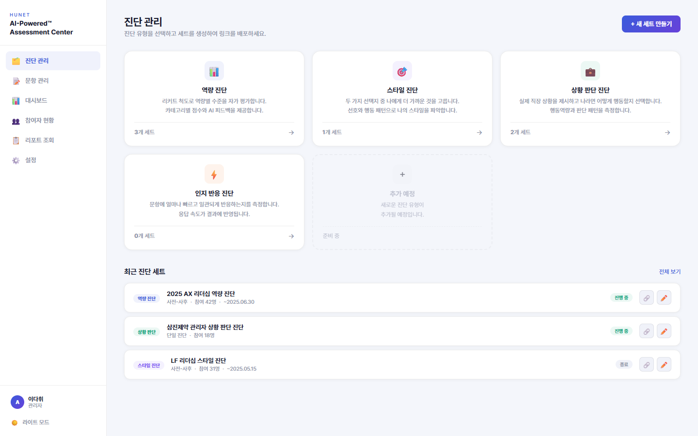
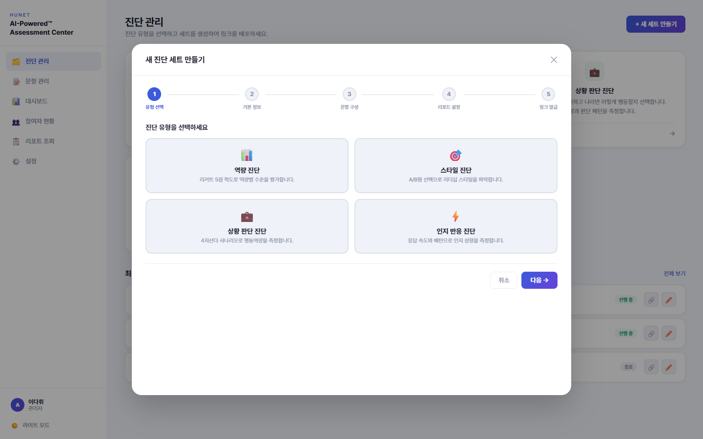
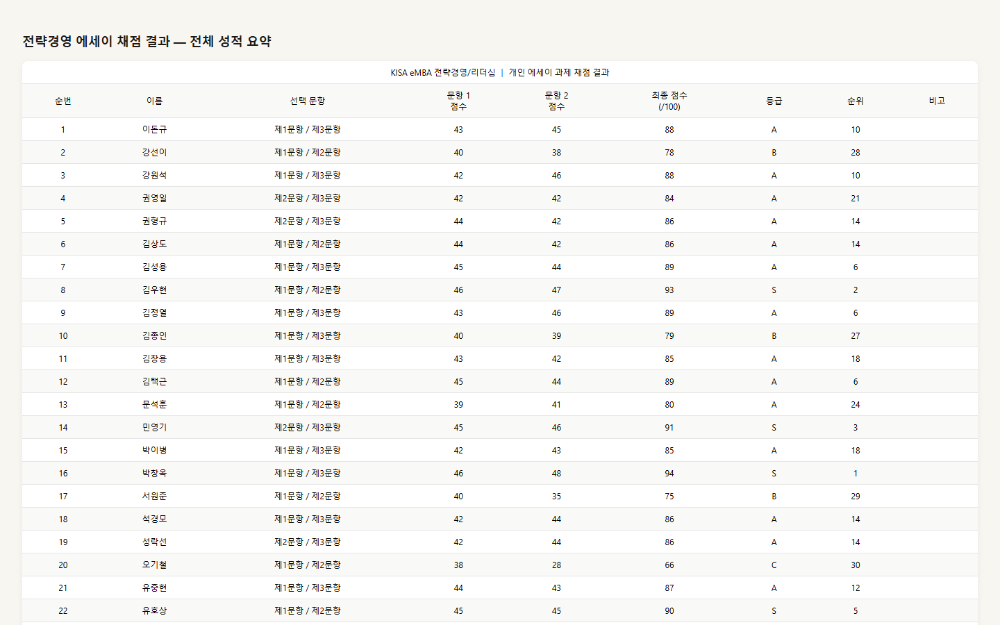
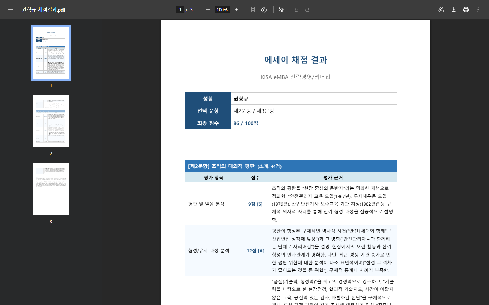

리더스아카데미팀이 실제 업무에서 AI를 활용하며 쌓은 노하우를 공유합니다. 프롬프트 기법이 아니라 '일하는 방식'의 전환에 대한 이야기입니다.
AI를 잘 쓰려면 프롬프트 기법보다 더 중요한 것이 있습니다. 내가 지금 어디에 있고, 어디로 가고 싶은지를 정확히 아는 것. 네비게이션에 출발지와 목적지를 정확히 찍어야 경로가 나오는 것과 같습니다.
이 공식은 아래 WHY-WHAT-HOW와 같은 개념의 다른 표현입니다. 현재 상태 = WHY, 원하는 방향 = WHAT.
AI 활용 역량은 프롬프트 기법이 아니라 자기 업무와 목표에 대한 메타인지 능력입니다.
엄청 빠르고 지식도 많지만, 맥락과 판단은 부족합니다. 좋은 지시와 검수가 있어야 제 역할을 합니다. 내가 '시니어'로서 방향을 잡아야 합니다.
AI의 가장 큰 가치는 '빈 페이지의 공포'를 없애주는 것입니다. 80%짜리 초안을 빠르게 만들고, 나머지 20%에 전문성을 집중하세요.
한 번에 완벽을 기대하지 마세요. AI와의 대화는 '핑퐁'입니다. 주고받을수록 내가 원하는 것에 가까워집니다.
프롬프트 공식을 외울 필요 없습니다. "왜 하는지"와 "뭘 원하는지"만 알면 됩니다.
"어떻게"는 AI가 해줍니다. 여러분의 전문성은 방향을 정하는 데 있습니다.
AI를 편리하게 쓰되, 아래 4가지는 반드시 기억해주세요.
고객 개인정보, 사내 기밀, 비밀번호를 AI에 입력하지 마세요. 외부 서버로 전송됩니다.
생성된 내용을 무조건 신뢰하지 마세요. 숫자, 날짜, 인용 출처는 반드시 원본 확인.
AI 생성물을 그대로 외부에 공개하기 전 표절 검사. 이미지·폰트 라이선스도 확인.
AI는 도구입니다. 최종 의사결정, 판단, 책임은 담당자에게 있습니다.
AI를 과신하지 않으려면 한계를 정확히 아는 것이 중요합니다. 아래 영역은 AI에 맡기면 안 되거나, 반드시 사람이 검증해야 합니다.
교육생의 감정 상태 파악, 민감한 피드백 전달, 갈등 상황 중재 등은 AI가 대신할 수 없습니다. 톤과 뉘앙스는 사람만이 정확히 판단합니다.
AI는 회사 내부 시스템(인사DB, 사내 게시판, 실시간 일정)에 접근할 수 없습니다. 사내 데이터를 AI에 제공할 때는 민감정보를 제거한 후 전달하세요.
복잡한 예산 계산, 통계 분석, 정확한 날짜 계산은 AI가 틀릴 수 있습니다. AI가 제시한 숫자는 반드시 원본 데이터와 대조하세요.
계약 조건 해석, 법적 자문, 윤리적 의사결정은 전문가의 영역입니다. AI 결과물을 법적 근거로 사용하지 마세요.
AI를 무조건 써야 한다는 부담을 가질 필요 없습니다. 아래 상황에서는 직접 하는 게 더 빠르고 정확합니다.
프롬프트는 기술이 아니라 '커뮤니케이션'입니다. 새로 입사한 똑똑한 인턴에게 업무를 지시한다고 생각해보세요.
앞서 배운 WHY-WHAT-HOW와 같은 원리입니다. 실전에서는 이 4가지로 풀어보세요.
"뭘 해줘"보다 "이걸 왜 하는지"를 먼저 알려주세요. 목적을 알면 AI가 맥락에 맞는 판단을 할 수 있습니다.
대상은 누구인지, 분량은 어느 정도인지, 어떤 톤이어야 하는지. 조건이 구체적일수록 결과의 품질이 올라갑니다.
기존 문서, 예시, 템플릿을 함께 주세요. "이런 느낌으로"는 모호하지만, 실제 예시는 명확합니다.
첫 결과가 완벽할 필요는 없습니다. "여기서 이 부분만 수정해줘"라고 이어가면 결과물이 점점 좋아집니다.
AI를 처음 업무에 도입할 때 많은 사람들이 겪는 시행착오입니다. 미리 알면 같은 실수를 피할 수 있습니다.
AI가 만든 제안서나 보고서를 바빠서 검수 없이 바로 보내는 경우가 있습니다. AI는 존재하지 않는 강사명을 넣거나, 틀린 수치를 자신 있게 쓸 수 있습니다. "이 강사가 누구냐"는 연락을 받게 되면 그때는 이미 늦습니다.
결과가 마음에 안 들면 "더 좋게 해줘", "아니 더 좋게", "좀 더 세련되게"를 반복하게 됩니다. 3~4번 반복해도 방향이 흐트러지기만 합니다. 구체적 기준 없이 "더 좋게"만 반복하면 AI가 매번 다른 방향으로 시도하기 때문입니다.
이름·연락처가 포함된 교육생 명단이나 사내 기밀 문서를 별 생각 없이 AI에 업로드하는 경우가 있습니다. AI는 외부 서버에서 동작하므로, 개인정보가 그대로 전송되는 셈입니다.
첫 결과가 완벽할 필요 없습니다. 아래 패턴으로 2~3번만 이어가면 원하는 결과물이 나옵니다.
교육 안내 메일을 만드는 실제 대화 과정입니다. 3번의 대화로 완성됩니다.
첫 결과가 별로라고 AI를 못 쓰겠다고 생각하지 마세요. 90%는 요청 방식 문제입니다.
가장 많이 쓰는 업무별 한 줄 시작 템플릿입니다. 이것만 복사해서 세부 정보를 채워넣으면 됩니다.
리더스아카데미팀이 실제 업무에서 AI를 적용한 5가지 사례입니다. 각 사례의 Before/After를 함께 살펴봅니다.
교육 제안서 커리큘럼(Word)과 연사 배치안 슬라이드(PPT) 모두 AI로 초안을 생성합니다. 기존 자료나 데이터를 AI에게 참고로 주고, 정해진 포맷에 맞춰 문서를 뽑아냅니다.
Claude Code에서 6개 AI 봇으로 구성된 개발 조직을 운영하고 있습니다. 교육 주제를 지정하면 9인 서브에이전트 팀이 시나리오·프롬프트·UI·평가 리포트를 자동 생성하고, 독립 평가관이 단계별로 품질을 검증합니다. 디스코드 채널에서 실시간 협업하며 작업합니다.
이러닝 강의 원고(PDF/PPT)를 업로드하면 객관식·단답형 평가문항을 출제합니다. 차시별 3문항씩, 출제 기준(개념 이해형, 상황 해석형, 단답형)을 제어합니다.
관리자가 직접 웹에서 진단 세트를 생성·관리합니다. 4가지 진단 유형(역량진단/리더십스타일/상황판단SJT/인지역량) 선택부터 문항 구성, AI 컨텍스트 설정, 리포트 옵션까지 위자드로 완성합니다.


에세이 파일을 첨부하면 루브릭 기반 자동 채점. 항목별 점수 + 등급 판정 + 종합 코멘트 + 평가 총평을 자동 생성하고, 개인별 Word 피드백 문서 + Excel 성적 요약표까지 일괄 출력합니다.


Claude Code 기반 6개 봇 + 22인 서브에이전트로 구성된 AI 개발 조직입니다. 각 에이전트에 전문 영역·품질 기준·평가 체계를 설정하여 운영합니다.
Claude Code 기반 6개 봇 + 22인 서브에이전트로 구성된 AI 개발 조직입니다.
5개 솔루션이 각각 다른 교육 목적과 시뮬레이션 방식을 가지고 있습니다.
단순 역할 분담이 아니라, 각 에이전트에 전문 스펙·업무 범위·품질 기준을 설정하여 운영합니다.
지시 수신부터 최종 납품까지, 모든 단계에 품질 게이트가 걸려 있습니다.
위 조직은 리더스아카데미팀의 특수 사례입니다. 일반 팀에서는 아래처럼 단계적으로 시작할 수 있습니다.
별도 설치 없이 claude.ai에서 바로 시작. 메일 초안, 문서 요약, 커리큘럼 설계 등 개인 업무에 활용. CLAUDE.md 없이도 대화만으로 충분합니다.
자주 쓰는 요청이 생기면 프로젝트 폴더에 CLAUDE.md를 만듭니다. 팀 규칙, 산출물 형식, 자주 쓰는 맥락을 한 번 정리하면 매번 반복 설명이 사라집니다.
반복 업무가 보이면 Claude Code를 설치하고 스킬을 만듭니다. "/교육안내메일"이나 "/커리큘럼설계" 같은 명령어 하나로 자동화합니다.
솔루션 개발처럼 복잡한 프로젝트가 생기면 그때 에이전트를 추가합니다. 처음부터 6봇을 만들 필요 없습니다. 업무가 커지면 자연스럽게 확장됩니다.
교육을 기획하고 운영하는 과정에서 반복되는 작업들이 있습니다. AI가 대신할 수 없는 판단은 사람이 하되, 초안 작성이나 정리 작업은 AI에게 맡길 수 있습니다.
과정명, 일시, 대상, 장소를 알려주면 안내 메일 초안을 만들어줍니다. 사전 안내, 리마인더, 사후 안내 등 톤만 바꿔서 재활용 가능.
만족도 설문 원본을 붙여넣으면 지표 요약, 자유 응답 분류, 개선점 정리를 해줍니다. 결과 보고서 초안으로 바로 활용.
교육 목표, 대상, 시간만 알려주면 과정 소개문, 모듈 구성안을 만들어줍니다. 용도별로 톤 조절 가능.
교육 배경, 수강생 특성, 고객사 요구사항을 정리해서 브리핑 문서 초안 생성. 템플릿처럼 활용.
참석 인원, 만족도, 피드백, 운영 이슈를 주면 보고서 초안 생성. 정해진 양식에 맞춰 채워넣기도 가능.
"MZ세대 리더십 교육 아이디어" 같은 주제를 주면 모듈 구성, 교수법, 참고 사례를 함께 고민해줍니다.
AI를 더 잘 쓰려면 도구 선택과 초기 세팅이 중요합니다. 자기 업무에 맞는 도구 하나를 제대로 세팅하는 것이 핵심입니다.
Claude에게 내 업무 맥락을 미리 알려두면, 매번 "나는 교육 운영팀이고…"를 반복할 필요가 없습니다. 한 번 설정하면 모든 대화에서 자동 반영됩니다.
참고 문서와 지침을 미리 세팅해두고 반복적으로 대화하는 기능입니다. "교육 제안서 작성" 프로젝트를 만들어두면 매번 자료를 첨부할 필요 없이 바로 작업할 수 있습니다.
PDF, Word 등을 올려두면 해당 프로젝트의 모든 대화에서 자동 참조.
"휴넷 관점으로 작성", "커리큘럼은 4열 표로" 같은 지침을 세팅.
새 대화를 열어도 문서와 지침이 유지. "코스콤 제안서" 같은 프로젝트를 만들면 됩니다.
Team 플랜에서는 팀원과 공유. 같은 참고 자료, 같은 지침으로 일관되게 작업.
Canva, Gmail, Google Drive, Slack 등을 Claude에 연결하면 복사-붙여넣기 없이 직접 작업합니다. 설정에서 원하는 앱을 클릭하고 로그인하면 끝입니다.
교육 홍보물, 프레젠테이션, SNS 카드를 대화 안에서 바로 생성. 브랜드 키트 적용 가능.
디자인 제작메일 검색, 스레드 요약, 답장 초안 작성. "이 고객사와 주고받은 메일 정리해줘"가 가능.
메일 관리드라이브 파일 검색·요약. "공유 폴더에서 작년 제안서 찾아서 요약해줘".
문서 검색채널·DM 검색, 스레드 요약. "이번 주 #교육운영 채널 논의 정리해줘".
커뮤니케이션스프레드시트 데이터 분석, 수식 작성, 차트 생성. "이 데이터 정리해서 피벗 테이블로"가 가능.
데이터 분석2026년 4월 기준으로 새로 추가된 기능 중 실무에서 바로 쓸 만한 것들입니다.
Claude가 대화 내용을 기억해서 다음 대화에 반영합니다. "나는 리더스아카데미팀이야"를 한 번 말하면, 이후 새 대화에서도 알고 있습니다. 환경설정과 비슷하지만, 대화하면서 자연스럽게 쌓인다는 점이 다릅니다. 설정 → 기능에서 확인·편집·삭제할 수 있습니다.
"이 데이터로 차트 만들어줘" 하면 대화 안에서 바로 인터랙티브 차트·다이어그램이 생성됩니다. 설문 결과를 막대 그래프로 보거나, 프로세스를 플로우차트로 그리거나, 비교 데이터를 테이블로 정리할 때 유용합니다. 생성된 결과물은 대화 안에서 바로 편집·수정할 수 있고, 다운로드도 가능합니다.
Mac/Windows 데스크톱 앱에서 내 컴퓨터 폴더에 직접 접근합니다. 파일 정리·생성·수정을 대화만으로 처리할 수 있고, 터미널 없이 바로 사용 가능합니다. Slack, Canva 등 커넥터 연동으로 복사-붙여넣기 없이 외부 도구와 연결됩니다.
Cowork(또는 Code)에서 CLAUDE.md 파일과 스킬을 활용하면, 매번 같은 지시를 반복하지 않고도 나만의 AI 업무 파트너를 만들 수 있습니다.
프로젝트 폴더에 CLAUDE.md 파일을 넣어두면, AI가 대화를 시작할 때마다 이 파일을 먼저 읽습니다. "이 프로젝트는 이런 거고, 이런 규칙을 지켜야 해"를 미리 알려주는 영구 지침서입니다.
스킬은 Claude에게 특정 업무의 전문가 모드를 부여하는 기능입니다. 슬래시 명령어(/)로 호출하면, 해당 업무에 최적화된 프로세스와 출력 형식으로 동작합니다.
claude plugins install frontend-design거창하게 시작할 필요 없습니다. 내일 업무 중 하나만 AI와 함께 해보세요.
복잡한 것부터 하지 마세요. 가장 반복적인 업무 하나를 골라서 시작합니다.
이메일 정리, 회의록 요약, 보고서 초안 등
"지금 뭐가 있고, 뭘 만들어야 하지?"
파일 첨부 + 조건 명시 + 결과 형식 지정
초안 검수 → 수정 요청 → 완성
지금 바로 claude.ai를 열고 아래 중 하나를 해보세요.
이 파일을 프로젝트 폴더에 저장하면, 다음부터 AI가 우리 팀 맥락을 자동으로 알고 시작합니다.
이렇게 설계한 스킬을 Claude Code에 등록하면, '/교육안내메일' 한 줄로 메일을 생성할 수 있습니다.
10분이면 됩니다. 결과를 보고 "여기를 이렇게 바꿔줘"라고 말해보세요. 그게 AI와 일하는 감각의 시작입니다.
AI 활용을 시작하면서 가장 많이 받는 질문들을 정리했습니다.
Claude Pro 월 $20(약 2.7만원)이면 개인 업무용으로 충분합니다. 팀 단위는 Team 플랜($30/인). API 사용 시 토큰 기반 과금이지만, 운영팀 업무 수준이면 월 1~3만원 내외입니다.
Claude Pro/Team은 입력 데이터를 학습에 사용하지 않습니다. 다만 고객 개인정보, 사내 기밀은 입력하지 마세요. 회사 보안 정책 확인 후 사용을 권장합니다.
초안으로 활용하되 반드시 검수가 필요합니다. 특히 숫자, 날짜, 고유명사, 인용 출처는 원본 대조. 외부 제출물은 표절 검사를 권장합니다.
Claude는 한국어 성능이 매우 높습니다. 한국어로 요청하고 한국어로 답변받을 수 있습니다. 다만 전문 용어가 많은 분야는 용어를 직접 지정해주면 더 정확합니다.
둘 다 훌륭한 도구입니다. Claude는 긴 문서 처리(20만자+), 파일 첨부, 코드 작성에 강점이 있습니다. 중요한 건 도구 선택보다 잘 쓰는 습관입니다.
외울 필요 없습니다. WHY(왜 하는지)와 WHAT(뭘 원하는지)만 기억하면 됩니다. 자주 쓰는 요청은 템플릿으로 저장해두면 편리합니다.
AI는 "자신 있게 틀린 말"을 할 수 있습니다. 이를 할루시네이션이라고 합니다. 특히 수치, 인용 출처, 고유명사에서 자주 발생합니다. 대응법: ① AI에게 "출처를 밝혀줘"라고 요청 ② 핵심 사실은 원본 자료와 대조 ③ 확실하지 않으면 "이 정보가 정확한지 다시 확인해줘"라고 재요청.
AI는 확률 기반으로 답을 생성하므로 같은 질문에도 다른 답이 나올 수 있습니다. 이건 정상입니다. 일관된 결과가 필요하면: ① 조건을 더 구체적으로 명시 ② "이전 답변과 같은 형식으로"라고 요청 ③ 마음에 드는 결과가 나오면 저장해두고 템플릿으로 활용.
현재 Claude는 한국어와 영어 모두 동일한 수준으로 처리합니다. 한국어로 질문하고 한국어로 답변받을 수 있습니다. 편한 언어로 쓰세요 — 중요한 건 언어가 아니라 요청의 구체성입니다.
정상입니다. 대부분의 사람은 "지금 하는 방식이 더 편하다"고 느낍니다. 설득하지 마세요. 대신 이렇게 해보세요: ① 내가 먼저 써서 결과를 보여주기 — "이거 AI로 10분 만에 만들었어"가 가장 강력한 설득입니다. ② 가장 귀찮은 업무 하나를 골라서 대신 해주기 — "설문 정리 내가 AI로 해줄게" 한 번이면 됩니다. ③ 강요하지 않기 — 관심 있는 사람부터 자연스럽게. 결과를 본 사람이 먼저 물어봅니다.